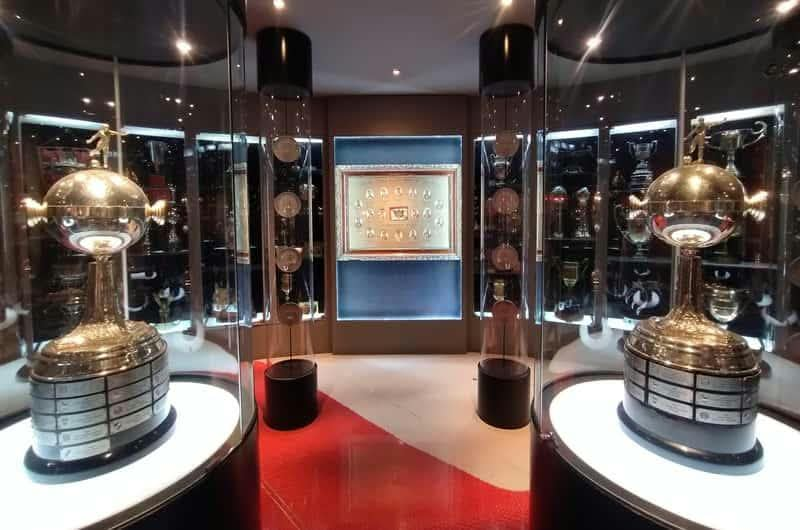
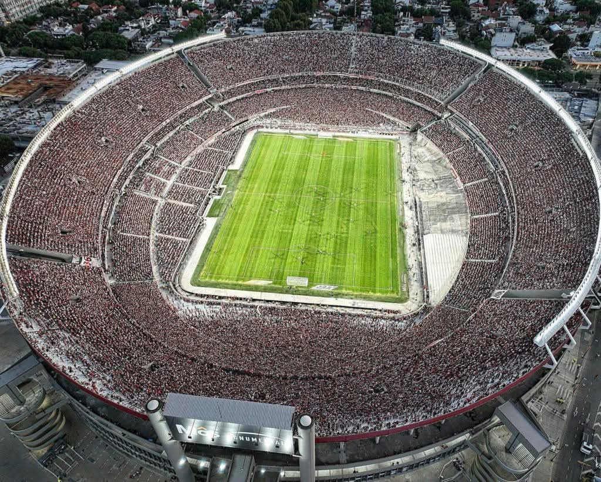

Estadio MÁS Monumental
Ubicado en Núñez, Buenos Aires, es el estadio de fútbol con mayor capacidad de Sudamérica y la casa del Club Atlético River Plate y la Selección Argentina. Además de partidos épicos, alberga el Museo River y grandes conciertos internacionales.
El Estadio Mâs Monumental, ubicado en el barrio de Belgrano en Buenos Aires, es la casa del Club Atlético River Plate. Tras su última remodelación, es el estadio más grande de Sudamérica, con capacidad para más de 84.000 espectadores y un césped híbrido de última generación.

Además de ser el escenario principal de River Plate y la sede habitual de la Selección Argentina, El Monumental recibe a los artistas internacionales más importantes del mundo y ha albergado finales históricas como la del Mundial de 1978.

Además de ser el escenario principal de River Plate y la sede habitual de la Selección Argentina, El Monumental recibe a los artistas internacionales más importantes del mundo y ha albergado finales históricas como la del Mundial de 1978.